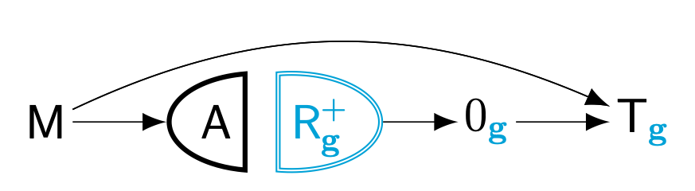

margot
MARGinal Observational Treatment-effects.1
The goal of margot is to enhance understanding of causality in observational research. We do this by:
Stating a clear causal question, specifying the intervention(s) to be contrasted, the outcome, the relative timing of interventions and outcomes, potential confounders, and the target population. We call this targeted quantity our causal estimand.
Considering obstacles to identifying our causal estimand from data. This involves asking whether findings from the baseline sample can transport to the target population, and whether selection processes introduce further distortion. It involves checking the three fundamental assumptions for causal inference: consistency, exchangeability, and positivity. It also involves identifying, and where relevant adjusting for, systematic measurement error biases beyond those arising from selection and assumption failures. It finally involves stating quantitative sensitivity and measurement bias analyses. Ideally steps 1 and 2 are completed before any data are collected, but investigators rarely have such luxury.
Defining the statistical estimator, or the method for estimating the targeted causal questions from data.
Performing data analysis, interpreting results, and conveying these results to interested audiences.
Although steps 1-3 are routinely skipped in social scientific research, they are indispensable. Without them, we have no way of assigning meaning to the statistical relationships we observe from data.
The package offers functions for evaluating causal assumptions, modelling time-series data, reporting results, and performing sensitivity analyses.
Installation
margot is currently available only on GitHub. Install it with pak:
# install.packages("pak")
pak::pak("go-bayes/margot")If you prefer remotes, use:
# install.packages("remotes")
remotes::install_github("go-bayes/margot")margot streamlines the estimation of (Marginal) Average Treatment Effects (ATT, ATE). It also supports workflows for Heterogeneous Treatment Effects (CATE) using grf, and Longitudinal Modified Treatment Policies using lmtp. margot is greatly indebted to the authors of these two excellent packages. margot is best seen as an extensive system of graphical and reporting functions that assist with the challenging tasks of asking and answering causal questions precisely.
Note that Margot is being actively developed, and is not currently in a stable state. Expect breaking changes.